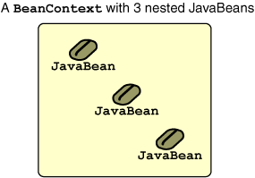
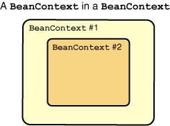

|
The "containment" portion of the Extensible Runtime Containment and Services Protocol is defined by
the BeanContext interface. In its most basic form, a BeanContext is used to
logically
group a set of related java beans, bean contexts, or arbitrary objects.
JavaBeans nested into a BeanContext are known as "child" beans.
Once nested, a child bean can query its BeanContext
for various membership information, as illustrated in the following
examples.
Here are some possible BeanContext containment
scenarios:


The sample code presented in this chapter uses instances of the
BeanContextSupport helper class to provide the basic BeanContext
functionality. A BeanContextSupport object is simply a concrete
implementation of the BeanContext interface.
With a BeanContextSupport instance, it is possible to:
BeanContext:
boolean add(Object o)
BeanContext:
boolean remove(Object o)
BeanContextMembershipListener:
void addBeanContextMembershipListener(BeanContextMembershipListener bcml)
BeanContextMembershipListener:
void removeBeanContextMembershipListener(BeanContextMembershipListener bcml)
BeanContext instances currently
nested in this BeanContext as an array or as an Iterator:
Object[] toArray(),
Object[] toArray(Object[] a), and
Iterator iterator()
BeanContext:
boolean contains(Object o)
BeanContext:
int size()
BeanContext currently has zero children:
boolean isEmpty()
BeanContext:
Object instantiateChild(String beanName)The following test programs, which are run from the command line, illustrate the use of these methods.
The comments in the source code explain the purpose of each.
File:Example1.java
import java.beans.beancontext.*;
public class Example1 {
private static BeanContextSupport context = new BeanContextSupport(); // The BeanContext
private static BeanContextChildSupport bean = new BeanContextChildSupport(); // The JavaBean
public static void main(String[] args) {
report();
// Add the bean to the context
System.out.println("Adding bean to context...");
context.add(bean);
report();
}
private static void report() {
// Print out a report of the context's membership state.
System.out.println("=============================================");
// Is the context empty?
System.out.println("Is the context empty? " + context.isEmpty());
// Has the context been set for the child bean?
boolean result = (bean.getBeanContext()!=null);
System.out.println("Does the bean have a context yet? " + result);
// Number of children in the context
System.out.println("Number of children in the context: " + context.size());
// Is the specific bean a member of the context?
System.out.println("Is the bean a member of the context? " + context.contains(bean));
// Equality test
if (bean.getBeanContext() != null) {
boolean isEqual = (bean.getBeanContext()==context); // true means both references point to the same object
System.out.println("Contexts are the same? " + isEqual);
}
System.out.println("=============================================");
}
}
============================================= Is the context empty? true Does the bean have a context yet? false Number of children in the context: 0 Is the bean a member of the context? false ============================================= Adding bean to context... ============================================= Is the context empty? false Does the bean have a context yet? true Number of children in the context: 1 Is the bean a member of the context? true Contexts are the same? true =============================================
Example2.java
import java.beans.beancontext.*;
public class Example2 {
public static void main(String[] args) {
// A BeanContext
BeanContextSupport context = new BeanContextSupport();
// Many JavaBeans
BeanContextChildSupport[] beans = new BeanContextChildSupport[100];
System.out.println("Number of children in the context: " + context.size());
// Create the beans and add them to the context
for (int i = 0; i < beans.length; i++) {
beans[i] = new BeanContextSupport();
context.add(beans[i]);
}
System.out.println("Number of children in the context: " + context.size());
// Context now has 100 beans in it, get references to them all
Object[] children = context.toArray();
System.out.println("Number of objects retrieved from the context: " + children.length);
}
}
Number of children in the context: 0 Number of children in the context: 100 Number of objects retrieved from the context: 100
Example3.java
import java.beans.beancontext.*;
import java.io.*;
public class Example3 {
public static void main(String[] args) {
BeanContextSupport context = new BeanContextSupport();
System.out.println("Number of children nested into the context: " + context.size());
BeanContextChildSupport child = null;
try {
child = (BeanContextChildSupport)context.instantiateChild("java.beans.beancontext.BeanContextChildSupport");
}
catch(IOException e){
System.out.println("IOException occurred: " + e.getMessage());
}
catch(ClassNotFoundException e){
System.out.println("Class not found: " + e.getMessage());
}
System.out.println("Number of children nested into the context: " + context.size());
}
}
Number of children nested into the context: 0 Number of children nested into the context: 1
The BeanContext API uses the standard Java event
model to register listeners and deliver events.
For an overview of this standard event model,
refer to
Writing Event Listeners.
For details about handling specific events, see
Writing Event Listeners.
In a basic BeanContext, the event classes and interfaces involved are:
java.beans.beancontext.BeanContextMembershipEvent: Encapsulates the list of children added to, or removed from, the membership of
a particular BeanContext.
An instance of this event is fired whenever a successful add(), remove(), retainAll(),
removeAll(), or clear() is invoked on a given BeanContext instance.
java.beans.BeanContextMembershipListener: Objects
wishing to receive BeanContextMembershipEvents implement this interface.
It defines methods
void childrenAdded(BeanContextMembershipEvent bcme) and
void childrenRemoved(BeanContextMembershipEvent bcme), which are called when a child is added to or removed
from a given BeanContext instance.
MembershipTest.java
import java.beans.beancontext.*;
public class MembershipTest {
public static void main(String[] args) {
BeanContextSupport context = new BeanContextSupport(); // the context
MyMembershipListener listener = new MyMembershipListener();
BeanContextChildSupport bean = new BeanContextChildSupport(); // a JavaBean
context.addBeanContextMembershipListener(listener); // now listening!
context.add(bean);
context.remove(bean);
}
}
class MyMembershipListener implements BeanContextMembershipListener {
public void childrenAdded(BeanContextMembershipEvent bcme) {
System.out.println("Another bean has been added to the context.");
}
public void childrenRemoved(BeanContextMembershipEvent bcme) {
System.out.println("A bean has been removed from the context.");
}
}
Another bean has been added to the context. A bean has been removed from the context.
import java.beans.beancontext.*;
public class MembershipTest {
public static void main(String[] args) {
BeanContextSupport context = new BeanContextSupport();
context.addBeanContextMembershipListener(new BeanContextMembershipListener() {
public void childrenAdded(BeanContextMembershipEvent bcme) {
System.out.println("Another bean has been added to the context.");
}
public void childrenRemoved(BeanContextMembershipEvent bcme) {
System.out.println("A bean has been removed from the context.");
}
});
BeanContextChildSupport bean = new BeanContextChildSupport();
context.add(bean);
context.remove(bean);
}
}
Another bean has been added to the context. A bean has been removed from the context.
|